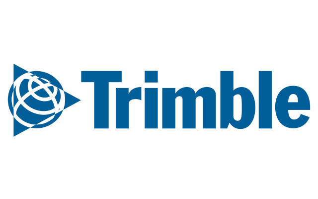

About
I am an accomplished Software Engineer with a strong track record in the computer software industry. My expertise spans multiple programming languages including C# and MySQL, alongside technologies such as WPF, GitHub, Azure, and .NET MAUI. I excel in developing diverse applications and services, optimizing database management, and implementing effective version control strategies.
My experience extends to leveraging Azure services to create scalable, high-performance cloud-based solutions. I am adept at integrating unit testing throughout the development lifecycle to ensure software reliability and maintainability.
Top Skills
- .NET Core
- .NET MAUI
- Windows Presentation Foundation (WPF)
- ASP.NET Web API
- HTML
- Microsoft SQL Server
Experience
Software Engineer at NextGen Healthcare (Jun 2024 - Present, India)
 Software Engineer at Trimble Inc (April 2023 - June 2024, India)
I am a dedicated Software Engineer specializing in .NET development, focusing on unit testing, Test-Driven Development (TDD), Azure, WPF, and MAUI. My role involves crafting robust applications with clean and efficient code, leveraging design patterns to ensure scalability and maintainability. I actively contribute to code reviews to maintain high code quality and foster a collaborative team environment.
Software Engineer at Trimble Inc (Jun 2021 - Mar 2023, India)
I developed Trimble Field Point Plugins tailored for leading design and drafting platforms such as AutoCAD, ARES Commander, and Revit, enhancing their functionality and efficiency.
Software Developer at CAD MAcRO (Jul 2018 - Mar 2021, India)
I focused on developing new 2D and 3D software solutions, encompassing unit testing and debugging existing software to ensure robust performance.
Education
 PSG College of Technology - Master's degree, Computer Integrated Manufacturing (2016 - 2018)
PSG College of Technology - Master's degree, Computer Integrated Manufacturing (2016 - 2018)
 Kongu Engineering College - Engineer's degree, Mechatronics (2012 - 2016)
Kongu Engineering College - Engineer's degree, Mechatronics (2012 - 2016)